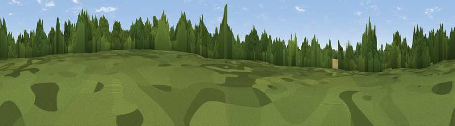

Crown Hill
#40917 in England · top 41% of its area beats it · near Debden GreenThe view, rendered

A 360° render of this exact spot computed from the terrain model, tree cover and land cover — summer colours, afternoon light, calibrated against photographs of famous viewpoints. Real trees, hedges and buildings will differ in detail.
The panorama
Grey silhouette: terrain skyline in each direction (720 bearings, Earth curvature and refraction included). Dashed green: skyline with trees (+15 m) and buildings (+8 m) as obstacles. Blue strip: how far the ground is visible on each bearing.
Where the view opens
Wedge length = distance to the farthest visible ground on that bearing (vegetation-aware). Rings at 10, 25 and 50 km.
What fills the view
50% woodland · 23% cropland · 23% grassland · 5% built-up
Angular shares of the visible panorama (visual magnitude), not map area. Landscape diversity 0.51 (0–1 Shannon).
Key numbers
More beautiful places nearby
The staircase of upgrades: each row has a higher view potential than everything closer. Driving times are estimates from straight-line distance, calibrated against real road routing — check an actual route before setting out.
| Place | Direction | Drive | Score |
|---|---|---|---|
| Epping Forest | ESE · 1 km | ~2 min | 31.4 |
| Wellington Hill | SW · 3 km | ~7 min | 32.8 |
| Viewpoint near Sewardstonebury | SW · 4 km | ~10 min | 49.8 |
| Viewpoint near Sewardstonebury | SW · 7 km | ~15 min | 50.3 |
| Viewpoint near Wood Green | SW · 17 km | ~29 min | 51.8 |
| Viewpoint near Erith | SSE · 23 km | ~38 min | 54.3 |
| Viewpoint near Horndon On The Hill | ESE · 28 km | ~45 min | 58.8 |
| Harrow on the Hill | WSW · 30 km | ~48 min | 60.7 |
51.68416, 0.06724 · source: osm peak · position refined by local search. Computed location — check access rights before visiting.